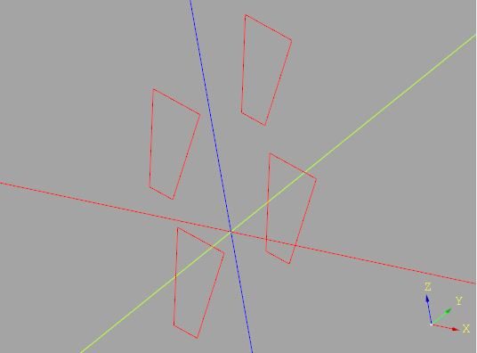
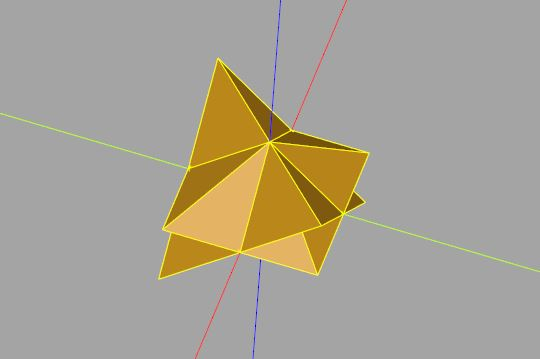
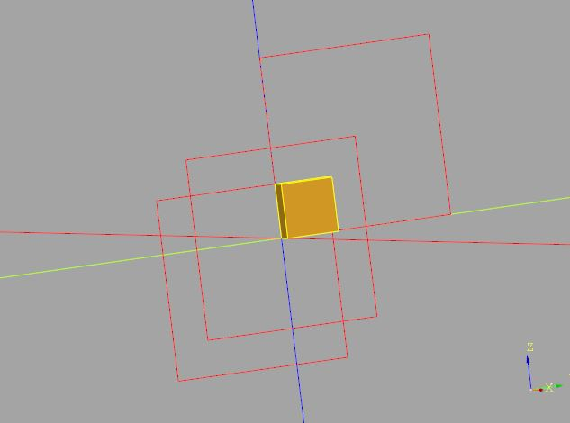

擴充 Workplane
November 27, 2021透過 Edge、Wire、Face、Solid 等來定義一些建模函式，當然是可以，只不過座標系統轉換就要自己來，面對一堆模型物件時，也得思考怎麼管理之類的問題。
Workplane 的職責
可以試著基於自定義的建模函式，擴充 Workplane，若你想這麼做，首先可以閱讀 CadQuery 官方文件〈Extending CadQuery〉，另一方面，翻閱 CadQuery 的原始碼，可以獲得不少靈感與做法。
要擴充 Workplane，必須掌握 Workplane 的職責，在至今為止的 Workplane 範例中應該也看過不少了，Workplane 的職責主要有以下幾個的管理：
- 區域座標系
- 點、邊、線、面、殼、實體等物件
- 操作堆疊
- Pending 區域
來以實際案例，說明在擴充 Workplane 時該如何顧及相關的職責處理，例如，在〈認識 BREP〉談到，Workplane 本身缺少可以指定頂點建立多邊形的方法，其實 CadQuery 本身是有個 Wire.makePolygon 能做到這件事，例如先來定義一個 _makePolygon：
from cadquery import (
Vector,
Wire,
Workplane
)
def _makePolygon(points, forConstruction):
return Wire.makePolygon((
Vector(*p) for p in points + [points[0]]
),
forConstruction
)
使用這個 _makePolygon，可以指定頂點建立多邊形，只不過現在想基於 Workplane 的區域座標系來建立多邊形，或者是說，若 Workplane 已經有管理了一組頂點，想在這些頂點建立一組多邊形，這時可以如下：
def makePolygon(self, listOfXYTuple, forConstruction = False):
p = _makePolygon(listOfXYTuple, forConstruction)
return self.eachpoint(lambda loc: p.moved(loc), True)
Workplane.makePolygon = makePolygon
注意到 makePolygon 的第一個參數要接受 Workplane，因為 makePolygon 最後會指定給 Workplane.makePolygon，作為 Workplane 的方法來呼叫，因此這邊就直接命名為 self。
makePolygon 中 _makePolygon 建立了多邊形線之後，透過 eachpoint 方法，這個方法會逐一傳入 Location 實例，代表 Workplane 管理中，可作為後續 CadQuery 物件建立時的中心座標點。
若 points 為 [(0, 0), (10, 10), (0, 20), (-5, 5)]，使用 Workplane().makePolygon(points)，就會在 XY 平面上建立一個多邊形線；然而，可以進一步地：
polygons = (Workplane('YZ')
.rect(25, 25, forConstruction = True).vertices().
makePolygon([(0, 0), (10, 10), (0, 20), (-5, 5)])
)
這就會在 YZ 平面上建立一組多邊形線：

polyhedron 方法
這就是為什麼要擴充 Workplane 了，在平面、相關物件的管理上非常方便；再來看個例子，在〈實作 polyhedron〉定義了 polyhedron 函式，現在也想用來擴充 Workplane 的話：
from cadquery import (
Vector,
Edge,
Wire,
Solid,
Shell,
Face,
Workplane
)
def _polyhedron(points, faces):
def _edges(vectors, face_indices):
leng_vertices = len(face_indices)
return (
Edge.makeLine(
vectors[face_indices[i]],
vectors[face_indices[(i + 1) % leng_vertices]]
)
for i in range(leng_vertices)
)
vectors = [Vector(*p) for p in points]
return Solid.makeSolid(
Shell.makeShell(
Face.makeFromWires(
Wire.assembleEdges(
_edges(vectors, face_indices)
)
)
for face_indices in faces
)
)
def polyhedron(self, points, faces, combine = True, clean = True):
poly = _polyhedron(points, faces)
poly_all = self.eachpoint(lambda loc: poly.moved(loc), True)
if not combine:
return poly_all
else:
return self.union(poly_all, clean = clean)
Workplane.polyhedron = polyhedron
這邊的 polyhedron 實作時，參考了 Workplane 的 box 方法，簡單來說，考量了操作堆疊中若已經有其他實體，是否做聯集的動作。例如，以下可以建立兩個多面體聯集後的結果：
tetrahedron_pts = (
(5, -5, -5),
(-5, 5, -5),
(5, 5, 5),
(-5, -5, 5)
)
tetrahedron_faces = (
(0, 1, 2),
(0, 3, 1),
(1, 3, 2),
(0, 2, 3)
)
pyramid_pts = (
(5, 5, 0),
(5, -5, 0),
(-5, -5, 0),
(-5, 5,0),
(0, 0, 5)
)
pyramid_faces = (
(0, 1, 2, 3),
(4, 1, 0),
(4, 2, 1),
(4, 3, 2),
(4, 0,3),
)
solid = (Workplane()
.polyhedron(tetrahedron_pts, tetrahedron_faces)
.polyhedron(pyramid_pts, pyramid_faces)
)
這可以建立以下的模型：

2D 布林操作
在〈Face 布林操作〉中，探討了實作 2D 版本布林操作的可行性，若想在 Workplane 上擴充相對應的方法呢？
〈Face 布林操作〉實現的相關函式，主要是基於 Face 或是 Compound，雖說在 Workplane 上，增加一組方法，像是 drawCircle、drawRect 等，令其產生 Face、Compound 等，然後加以管理，以便後續鏈狀操作時，可以用來進行擠出、取得線等動作也是可以，不過會是比較大的工程，另一方面，這其實是在增加 Workplane 管理物件上的職責。
其實要能做到 2D 布林操作，還有個投機取巧的方式，將線擠出為相同高度的實體，進行布林操作，對結果取得平面上的邊，這會需要多一點的運算，然而，程式碼上會簡潔許多，例如，來個 intersect2D 方法：
from cadquery import (
Workplane,
DirectionSelector
)
def intersect2D(self, toIntersect):
# 建立新的 Workplane，消耗其 pending 區域
toExtruded = (
# plane 特性是 Plane 實例，包含了平面方向等資訊
Workplane(toIntersect.plane)
.add(toIntersect.vals())
.toPending()
)
intersected = self.extrude(1).intersect(toExtruded.extrude(1))
# 取得平面負 z 方向的面
planeZdir = DirectionSelector(-self.plane.zDir)
return intersected.faces(planeZdir).wires().toPending()
Workplane.intersect2D = intersect2D
r1 = cq.Workplane('YZ').rect(10, 10)
r2 = cq.Workplane('YZ').center(5, 5).rect(10, 10)
r3 = cq.Workplane('YZ').center(-2, -2).rect(10, 10)
r4 = r1.intersect2D(r2).intersect2D(r3)
show_object(r1)
show_object(r2)
show_object(r3)
show_object(r4.extrude(1))
這邊要注意的一個問題是，因為 intersect2D 實作時，會將 Workplane 管理的線擠出，具體來說，就是將 pending 區域的線消耗掉，對於 self 而言，例如 r1 來說，這沒問題，畢竟交集後會是一個新的線物件。
然而，對於被交集者 toIntersect，例如 r2，它只是個用來計算交集區域的參考對象，後續你也許還會對 r2 擠出，或者用來與另一個線物件進行交集，這時勢必又得有擠出的動作，不過 pending 區域的線已經被消耗掉了。
雖然說，再次對 r2 使用 toPending() 方法，可以將線物件再加入 pending 區域，不過，這曝露了 intersect2D 的實作是投機取巧地、擅自地消耗掉 pending 區域，為了不讓呼叫方知道這一點，intersect2D 中建立了新的 Workplane，加入 toIntersect 的線，放到它的 pending 區，這麼一來，後續消耗掉的，就只是 toExtrude 的 pending 區域。
注意，因為傳入的 Workplane，不見得是 XY 平面，建立新的 Workplane 時，別忘了來源的平面方向等資訊要保留，而在選擇面時，要選擇的是目前平面的負 z 方向，而不是世界座標的負 z 方向。
來看看執行的結果：

cqMore
以上只是幾個擴充 Workplane 的示範，總之，閱讀 CadQuery 官方文件〈Extending CadQuery〉、翻閱 CadQuery 的原始碼，特別是後者，對於擴充 Workplane 會很有幫助。
如果你有心好好維護一個 CadQuery 的擴充，需要考量的還會更多，例如，CadQuery 本身其實很好地考量了型態檢查的需求，這對於程式基礎（code base）越來越龐大時，在維護上會越來越有幫助。
我本身是將一些 OpenSCAD 的建模經驗，結合 CadQuery 風格，建了一個 CadQuery 的第三方擴充 cqMore 專案，有興趣可以參考一下。